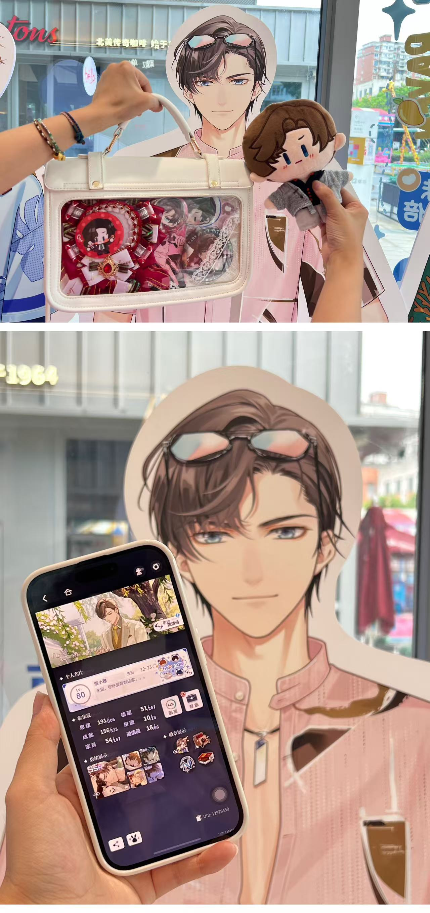
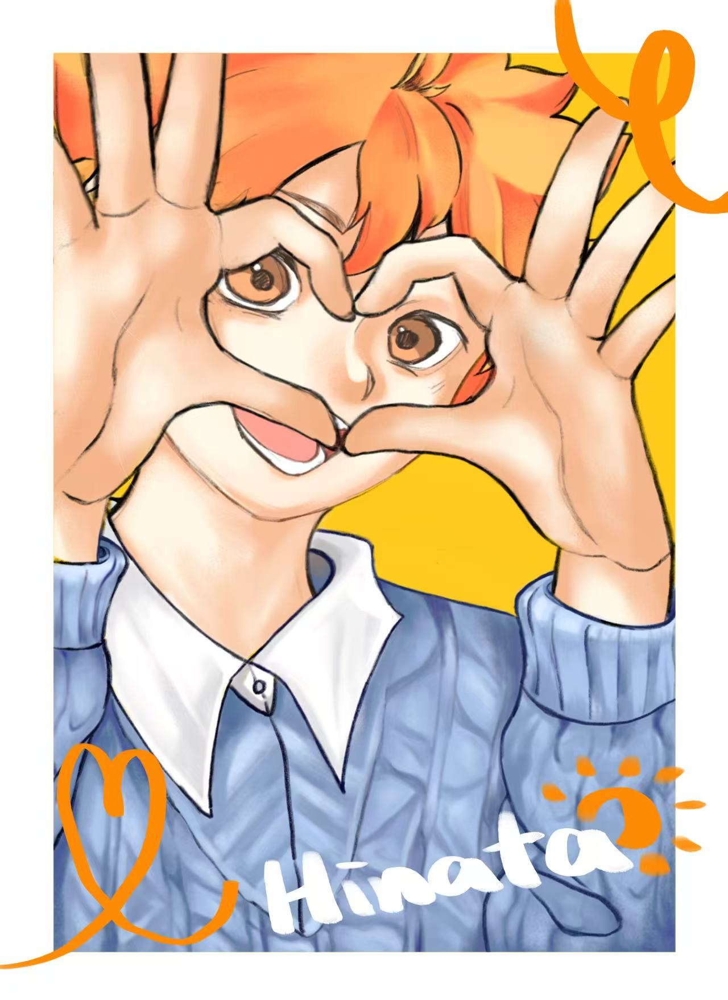
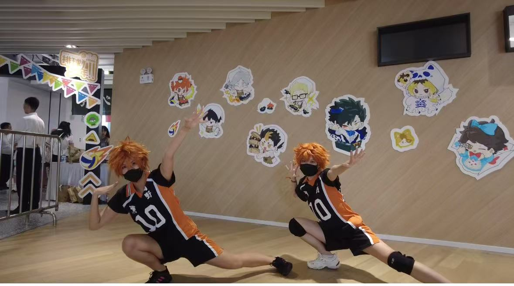
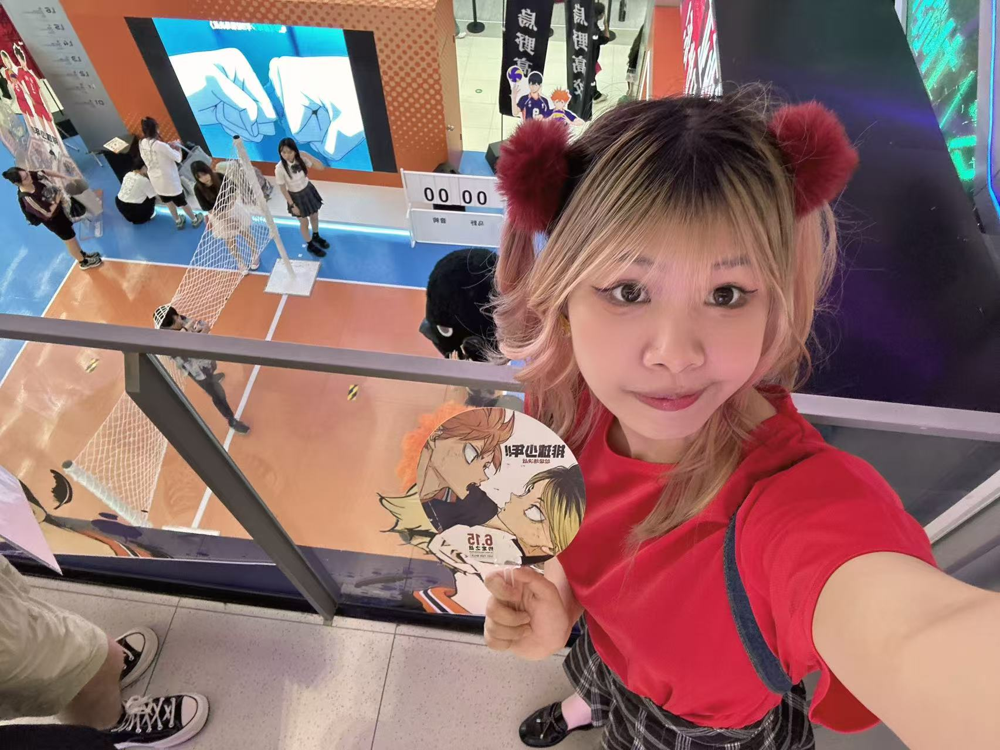
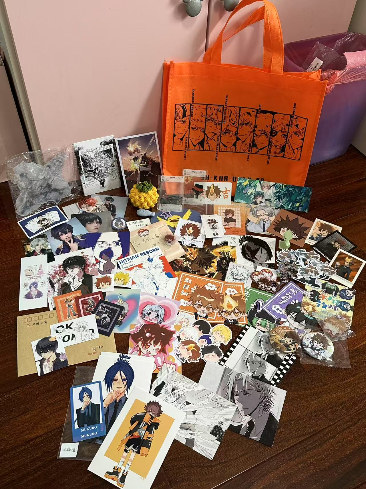

Helen ➩ Could you briefly introduce yourself? Including your nickname, pronouns, age, and current occupation.
Tijiena ➩ I’m Tijiena, 22 years old, and I’m a student.
H ➩ Before you were selected as the interviewee, I learned that you have experience building parasocial relationships with fictional characters. Could you briefly describe through which mediums (manga/comics, anime/animation, games, novels, movies, TV dramas, etc.) you primarily establish such relationships with fictional characters?
T ➩ Mainly through anime and games. Also novels, but the connection tends to be weaker.
H ➩ For games and anime, which you feel allow you to form deeper relationships with characters, what aspects of these mediums do you think enable you to establish such profound connections?
T ➩ I think games and anime are different. For games, it’s because you actively engage with them. There’s also a distinction between non-buy-to-play and buy-to-play games. For me, buy-to-play games tend to have a deeper sense of immersion because they primarily sell a complete storyline. As a player, you naturally invest your emotions into the game, empathize with the protagonist, and experience the story firsthand—it feels very organic.
Non-buy-to-play games, on the other hand, rely on long-term companionship. When you play a game over an extended period, it becomes a part of you. Even if each individual gaming session is short, the accumulated experiences over time integrate into your daily life. It’s like small things adding up.
Overall, games allow for greater immersion. As for anime, since you’re a passive recipient, just watching, you might develop an initial attachment to a character during the viewing process. If I particularly like a character, I might search for fanfiction about them, and that’s usually when my genuine passion for the character begins.
For novels, personally, the connection feels weaker. Novels tend to have a smaller audience, and many are one-off purchases—once you finish reading, that’s it. Even if you really love it, there’s no further content, so your affection might fade over time.
H ➩ Through these mediums, how do you establish parasocial relationships with fictional characters?
T ➩ For the characters I like, I don’t necessarily see them as friends or romantic partners, but I do imagine scenarios, like what it would be like if we existed in the same world. Honestly, I can’t define my relationship with these characters in terms of specific roles. To me, it’s more like an emotional connection.
H ➩ Which characters do you have such relationships with?
T ➩ Right now, I’d say Zuo Ran from Tears of Themis and Hinata Shoyo from Haikyuu!!.
Zuo Ran is a brilliant and composed defense attorney in Tears of Themis. As a key member of Themis Law Office, he balances professionalism with a subtle warmth.

Whether it’s games or anime, my emotional attachment is usually to the protagonist.
I empathize with them because I understand them better and protagonists tend to have more stories, making it easier to connect with them. If a protagonist isn’t my type, I might not develop strong feelings for anyone in that work.
For characters like Zuo Ran, since the game is a dating simulator with multiple options, I choose based on my preferences.
H ➩ Why do you think you form these kinds of relationships? How do these characters move you emotionally or in other ways?
T ➩ First, when I choose to engage with a work, whether playing, watching, or reading, I’m already selecting based on my preferences. Not every work appeals to me, so my tastes are the foundation for forming these connections.
To elaborate, I tend to like genuinely ‘good’ characters—pure-hearted, optimistic, and uplifting. For example, Zuo Ran has loving parents and a happy family, which shaped him into a warm, kind, and earnest person. He’s also a bit awkward and innocent, which I find endearing. Some people are drawn to characters with tragic backstories, but I’m not into that. My life is already stressful enough so I don’t want to feel sad for the characters I love, and I prefer ones who are consistently happy.
H ➩ You mentioned that your life has had its share of difficulties, so you’re drawn to optimistic characters who bring you energy. Or is it because you’re naturally inclined toward such personalities yourself?
T ➩ I’m not sure if I’m like that myself, but I do gravitate toward such characters.
My preferences for dating sim characters might overlap with my real-life romantic ideals. For instance, in stories with love triangles where one lead is antagonistic, I find those types annoying and unappealing—even if they’re popular. The traits I like, whether in real people or fictional characters, naturally draw me in.
H ➩ Do these relationships affect your real life? Are the effects positive, negative, or mixed?
T ➩ Mostly positive. If I had to name a downside, it’s that I spend too much money lol.
First, it helps with real-life social interactions. If you and someone else like the same character or work, it gives you common ground and makes conversations easier. It keeps you from seeming boring. It also gives you things to do in your free time, like attending events. Plus, the characters provide emotional support—like feeling happy when a favorite character gets a cute piece of merch. It fills a void and keeps life from feeling too empty.
H ➩ Have you made any efforts for this relationship? (Such as creating fanart, cosplay, buying merchandise, participating in related events, etc.)
T ➩ I’ve drawn some fan art, but not much. Drawing is exhausting for me—the effort it takes to finish a piece temporarily dampens my love for the character. It’s not that I stop liking them, but the intensity drops for a while before recovering if I stay engaged. The main issue is that my favorite characters are hard to draw, and my skills are limited. Even when I put in a lot of effort, the results aren’t satisfying, which makes me less enthusiastic. Lately, though, this has improved a bit.

I also feel “trapped” by certain games and the characters. For example, some games have surveys asking, “Will you keep playing?” and my answer is usually “probably.” But when they ask, “What’s the longest you’ve gone without logging in?” the shortest option is “less than a week,” which is all I can pick. They also ask, “What other games are you playing lately?” and the truth is, I’m not playing anything else. Even if I’m not entirely happy with the game, I feel stuck in it.
I do cosplay, but only as characters I love.

As for events, I do participate. I see them as experiences, and skipping them often leads to regret—like seeing photos online later and wishing I’d gone. Plus, how can you know if something’s fun if you don’t try it? Attending events doesn’t feel like a huge effort—just buy a ticket, show up, and complete my goals for the day. I’m not the type to get exhausted after two hours, and I can always take breaks. Compared to creating or cosplaying, I lean more toward attending events.

